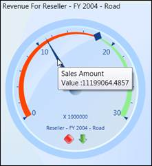
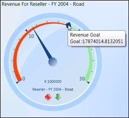

The OLAP Gauge control can display the tooltip information when the mouse pointer is moved over the gauge pointer or marker.
Pointer ToolTip
The OLAP Gauge control for WPF provides value information when the mouse pointer is moved over the pointer. This is achieved by enabling the ShowPointersTooltip property of the gauge control. The following code example illustrates the setting of this property.
|
[C#]
this .olapGauge1.ShowPointersTooltip = true; |
|
[VB]
Me .olapGauge1.ShowPointersTooltip = True |
The following screen shot illustrates a pointer tooltip displayed for the OLAP Gauge.

Figure 30: Pointer Tooltip
Marker ToolTip
The OLAP Gauge control for WPF provides goal information when the mouse pointer is moved over the marker. This is achieved by enabling the ShowMarkersTooltip property of the Gauge control. The following code example illustrates the setting of this property.
|
[C#]
this.olapGauge1.ShowMarkersTooltip = true; |
|
[VB]
Me.olapGauge1.ShowMarkersTooltip = True |
The following screen shot illustrates a marker tooltip displayed for the OLAP Gauge.

Figure 31: Marker Tooltip
Sample Location
A sample demo is available at the following location:
..\Syncfusion\EssentialStudio\<Version Number>\BI\WPF\OLAPGauge.WPF\Samples\Product ShowCase\Product Showcase Demo\